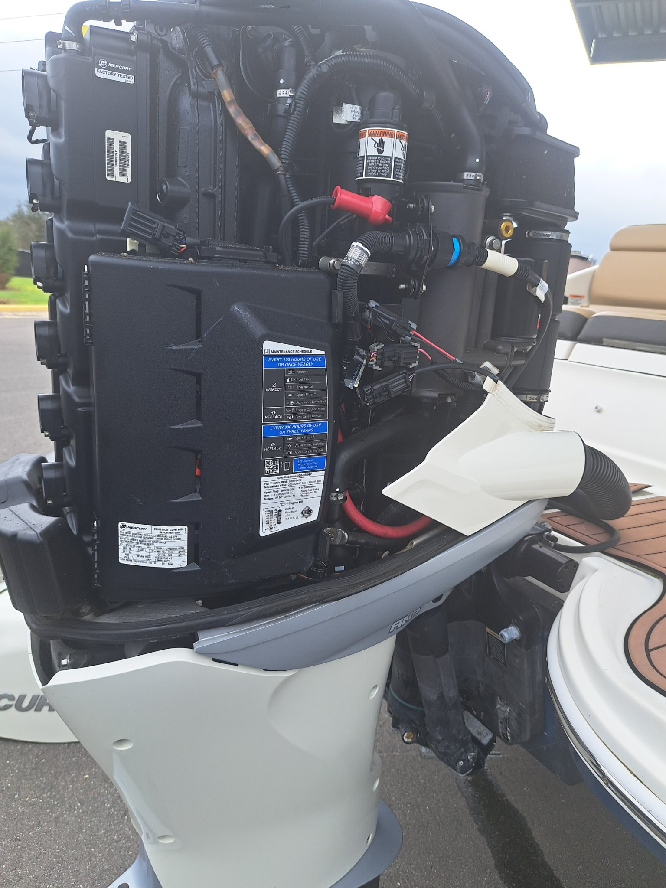

Won't start, alarm going off, losing power under load, overheating — we track it down at your boat with professional scan tooling, then give you a straight answer and a price before any work starts.
Mercury, Yamaha, Evinrude, Suzuki, Tohatsu. Fuel systems, ignition, powerheads, lower units, water pumps, tilt & trim.
MerCruiser and Volvo Penta sterndrives, PCM inboards. Bellows, gimbal bearings, manifolds, full drivetrain service.
Diagnostics, maintenance, and repair for personal watercraft — at the ramp or your driveway.
Factory-schedule service: oil & filters, fuel filters, gear lube, water pump impellers, spark plugs, anodes. Flat-rate labor by engine size — ask for your motor's price.
Battery drains, dead gauges, bilge pumps, lighting, accessory wiring — marine electrical done right, not patched.
East coast service is by appointment. A travel fee applies outside the local area — we'll quote it up front when you call, so there's no surprise on the invoice.